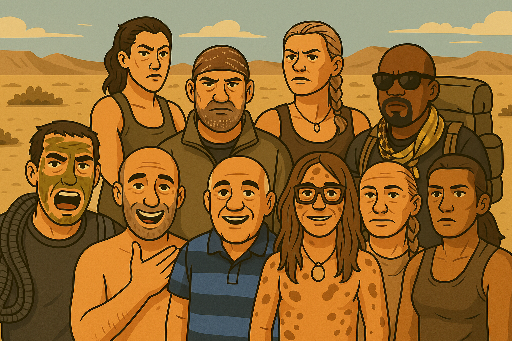
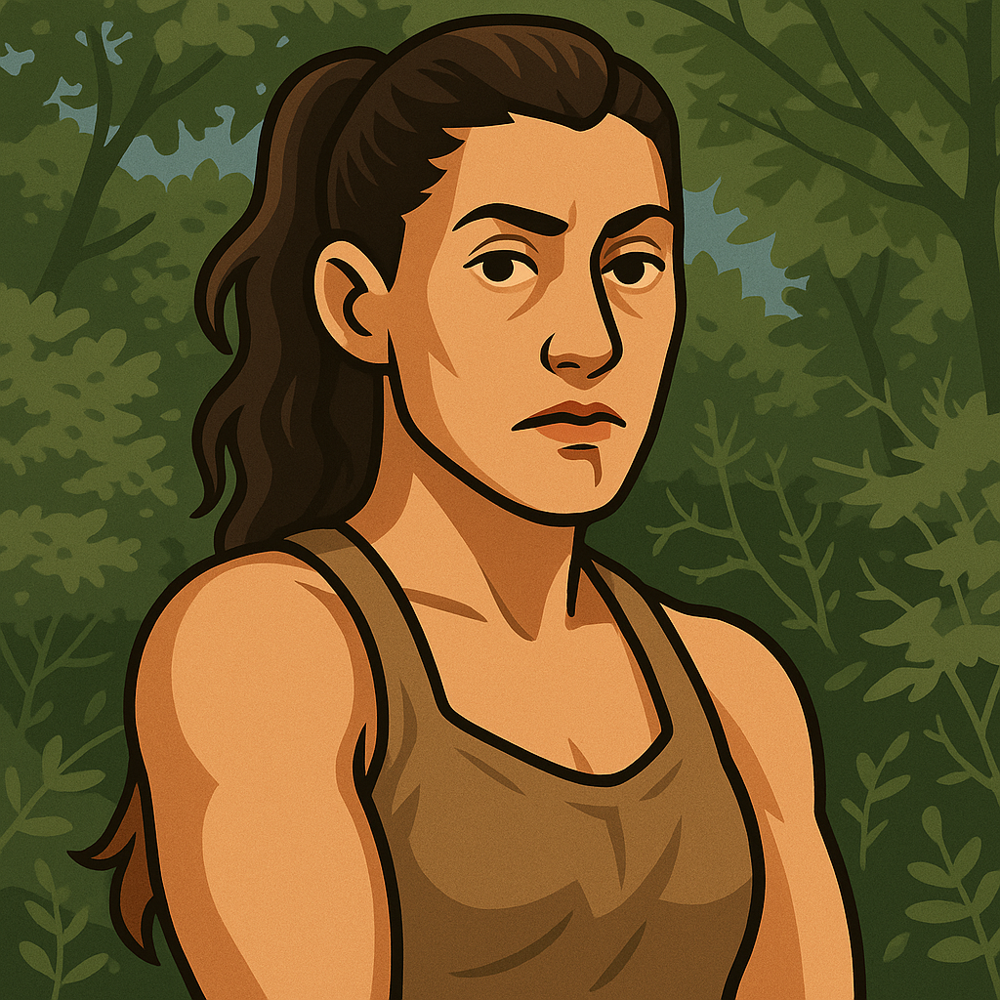
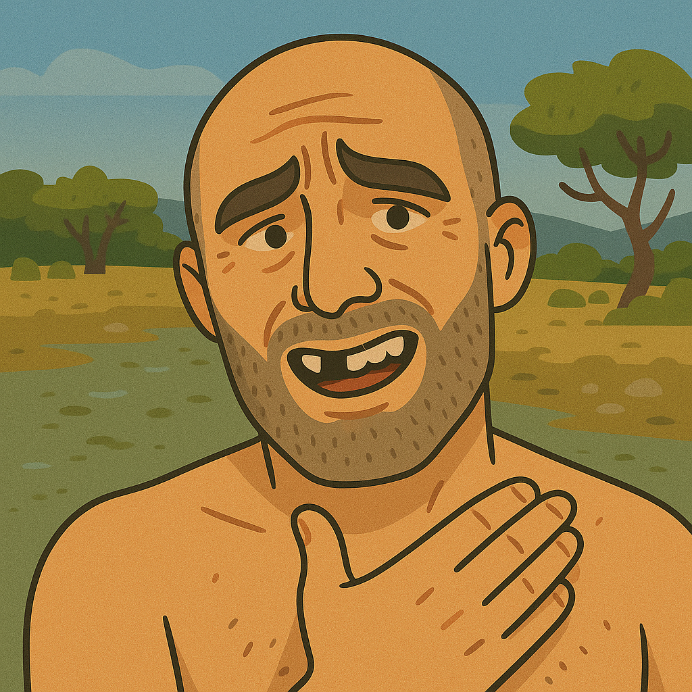
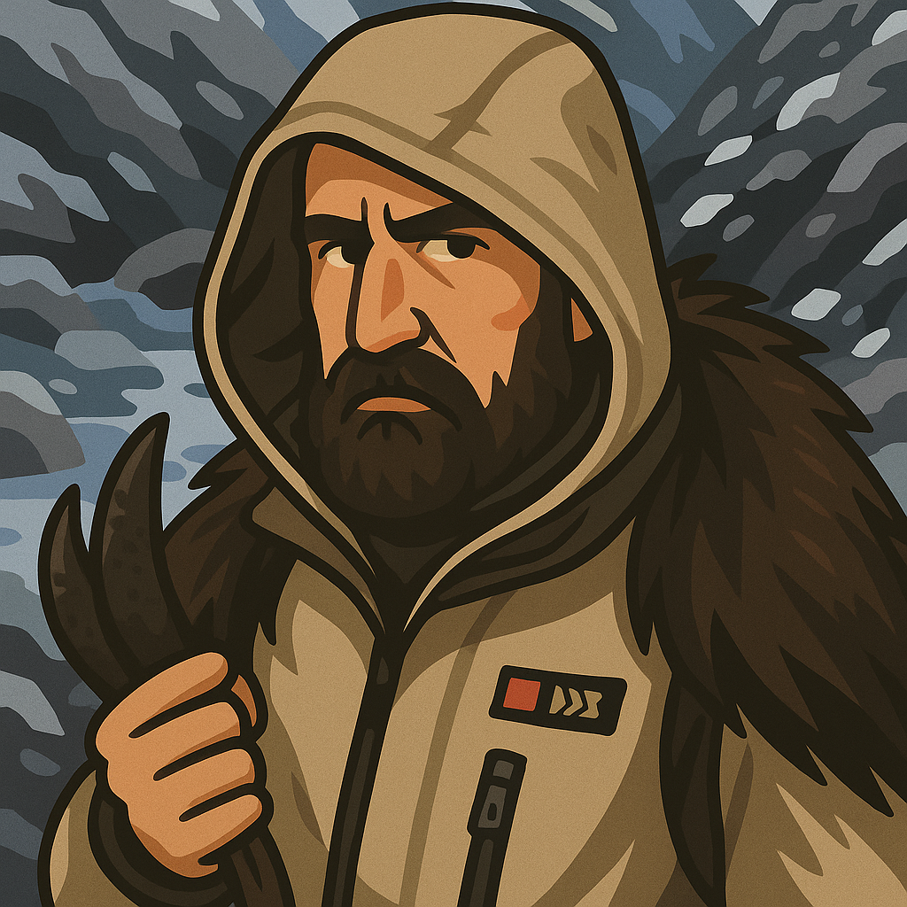
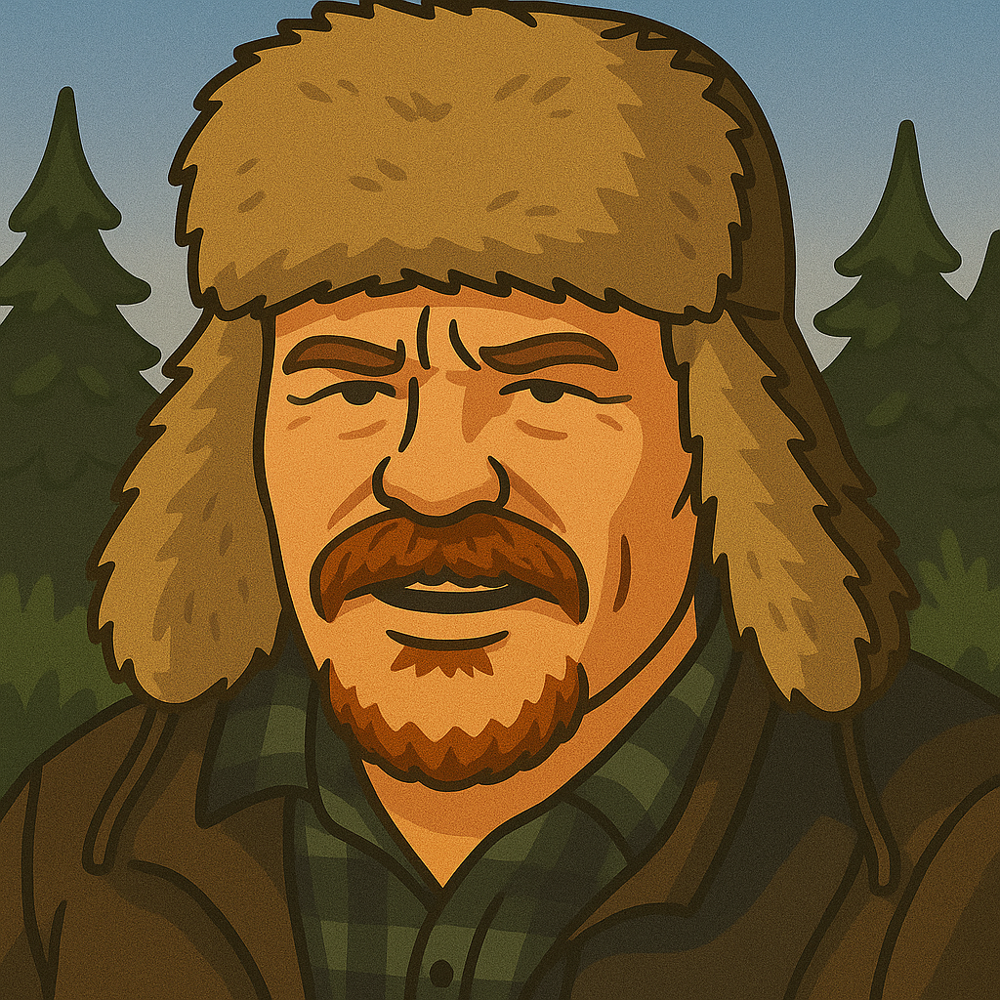
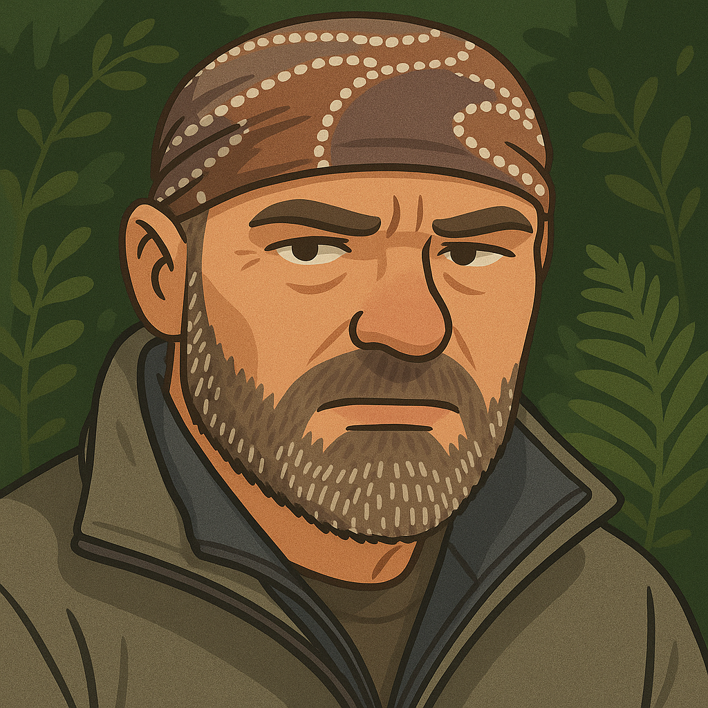
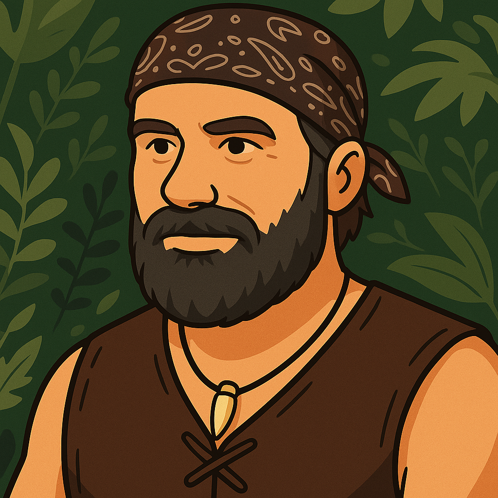
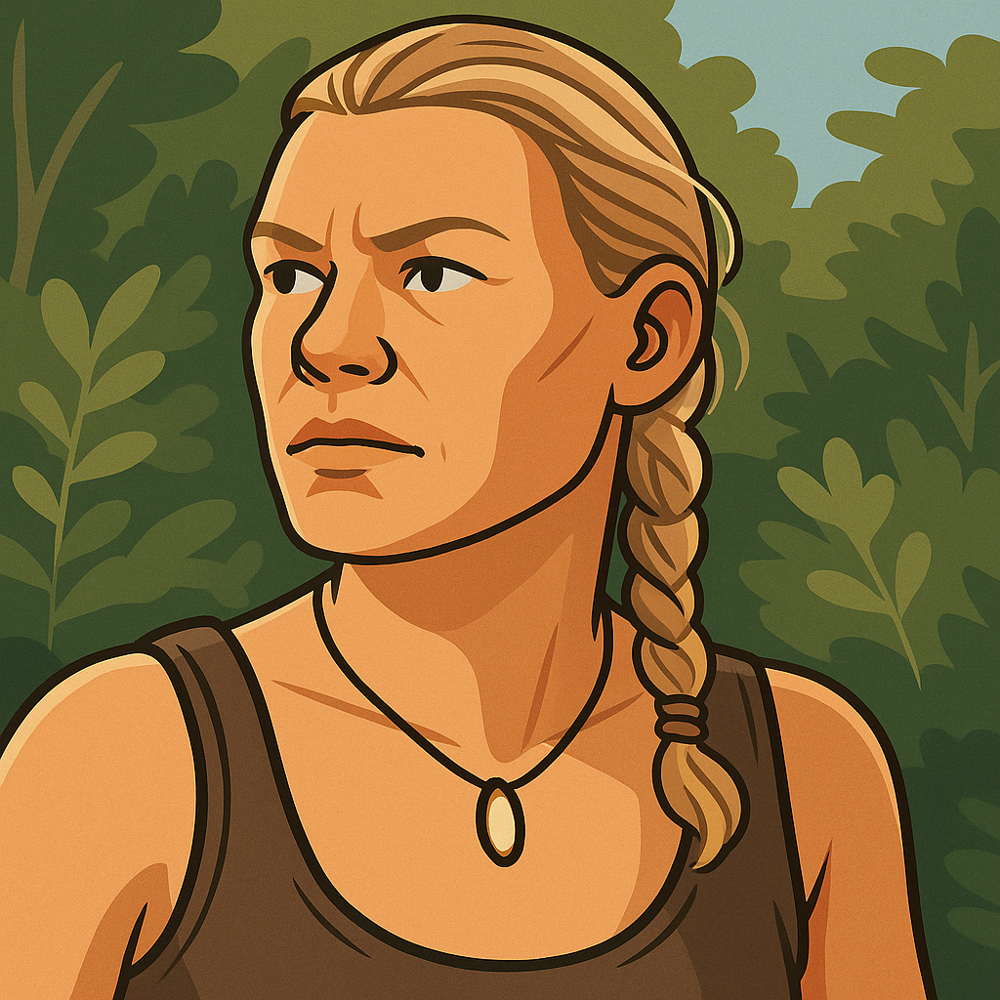

生存是为了脱困，Bushcraft是为了归林。 前者是你掉进了野外，想尽快离开； 后者是你走进去，打算久住。
技能多有重叠，都是靠手、靠火、靠脑子活命。 但目的不同。 Bushcraft用的是能修的东西，陪你一冬再一冬； 生存用的是不会坏的，撑过一夜算一夜。
两者都靠应变。你得看、得想、得快。
电视上讲生存，看起来刺激；
Bushcraft没那么多戏，是种真实的生活。没镜头也照样过。
下是使用manus整理的著名电视节目生存大师相关的资料。头像由chatgpt4o生成 名人堂网站：https://www.bushcraftchina.com/halloffame.html 下一期，整个Bushcraft意见领袖的资料
——————
本报告旨在分析全球范围内多位著名生存大师的当前状况。通过收集和梳理这些顶尖专家（贝尔·格里尔斯、凯特·比格尼、艾德·斯塔福德、哈基姆·伊斯勒、约翰·怀斯曼、乔什·詹姆斯、拉斯·蒙森、莱斯·斯特劳德、马特·格雷厄姆、奈斯·奈特以及生存莉莉）的公开简历、媒体报道、官方网站信息及其他权威资料，本报告将逐一介绍各位大师的近期活动、主要成就、社会影响以及个人发展动态。此外，报告还将对这些生存大师的职业路径、媒体参与度、技能特点、社会角色等方面进行横向对比，总结其共性与差异，并探讨当代生存专家的发展趋势。本报告所有信息均截至2025年5月13日，并尽可能注明来源，力求客观、详实地展现全球生存大师的现状风貌。
 —————— ## 生存大师现状详述
以下将分别详述各位生存大师的现状：排名以姓名字母顺序 ### 贝尔·格里尔斯 (Bear Grylls)
贝尔·格里尔斯（Bear Grylls），本名爱德华·迈克尔·格里尔斯（Edward Michael Grylls），1974年6月7日出生于北爱尔兰多纳哈迪，是英国著名的探险家、作家、电视节目主持人以及前英国特种空勤团（SAS）士兵。他以其在极端环境下的生存技能和电视节目《荒野求生》（Man vs. Wild）而闻名于世。
近期主要活动与成就：
根据维基百科的最新信息（截至2025年5月13日访问），贝尔·格里尔斯在职业生涯中持续保持活跃。他参与了多档在英国和美国广受欢迎的野外生存系列电视节目，例如《与贝尔·格里尔斯一起奔跑》（Running Wild with Bear Grylls）和《贝尔的荒岛求生》（The Island with Bear Grylls）。这些节目通常邀请名人参与，在严酷的自然环境中挑战生存极限，获得了广泛的关注和好评。
2024年4月，贝尔被任命为英国陆军预备学院（Army Foundation College）的名誉上校，这是一个象征性的职位，此前由汤姆·摩尔上尉担任。这显示了他在军事及公众领域持续的影响力。
社会职务与荣誉：
贝尔·格里尔斯曾长期担任英国童军总会（The Scout Association）的首席童军总领袖。他于2009年7月被任命，时年35岁，是该组织有史以来最年轻的首席总领袖。他担任此职务直至2024年9月，成为继罗伯特·贝登堡之后任期第二长的首席总领袖。这反映了他在青少年教育和领导力培养方面的长期贡献和承诺。
此外，他还在2004年被授予皇家海军预备役少校的荣誉军衔，2013年被授予皇家海军陆战队预备役中校的荣誉军衔，并于2021年6月晋升为名誉上校。
个人生活与信仰：
贝尔·格里尔斯于2000年与莎拉·坎宁斯·奈特（Shara Cannings Knight）结婚，育有三个儿子。他是一名英国国教徒，并公开表示其基督教信仰是他生活的“支柱”。他曾是素食主义者，但现在饮食以动物性食物以及水果和蜂蜜为主。
总结：
综合来看，贝尔·格里尔斯目前仍然是全球最具影响力的生存专家之一。他通过持续制作高质量的电视节目，保持着极高的公众曝光度和媒体影响力。同时，他在社会服务领域，特别是在童军运动和与军事相关的荣誉职位上，也扮演着重要角色。他的探险精神、生存技能以及积极的生活态度，持续激励着广大观众。尽管他的一些行为（如2015年将其儿子置于险境的事件）曾引发争议，但这并未显著影响其整体的公众形象和职业发展。他依然活跃在探险、媒体和社会活动等多个领域，其“现状”可以说是持续成功和多元发展的状态。
参考资料：
——————

凯特·比格尼（Cat Bigney）是一位在原始技能和户外生存领域经验丰富的专家。根据其在博尔德户外生存学校（BOSS - Boulder Outdoor Survival School）的官方简介（截至2025年5月13日访问），她目前的核心角色之一是在该学校担任教员。
核心工作与理念： 凯特在BOSS任教超过十年，她选择在此工作是因为她希望与自然世界和自我重新建立联系，深化对原始技能和户外生存的知识，并体验摆脱现代“必需品”束缚的自由。她坚信通过与对该领域感兴趣的人以及更广泛的社群分享知识来进行教育交流。她热爱与学生之间的互动，并乐于看到人们在经历了艰苦的野外生活后，在技能和心态上发生的转变。她认为BOSS所在的地区是地球上最美丽的地方之一，这种环境本身也具有启发性。
教育背景与专业技能： 凯特拥有人类学和地质学的学士学位。这一学术背景为她在理解人类与自然环境互动、地质构造以及古代生存智慧方面提供了坚实的理论基础。她对野外医学充满热情，并专注于研究在偏远地区如何灵活应变地为患者提供充分护理的方法。这表明她在生存技能教学中，除了传统的生存技巧外，也高度重视野外急救和医疗应变能力。
其他活动与影响力： 除了在BOSS的教学工作，凯特·比格尼还是一位活跃的运动员，曾参与水球、橄榄球等接触性运动的竞赛，目前仍在参与橄榄球运动。这种体育背景无疑增强了她的体能、耐力和团队合作精神，这些都是在极端生存环境中至关重要的素质。
此外，凯特经常在全球各地的生存和人类学电视节目中担任主持人或嘉宾。这表明她在媒体领域也具有一定的影响力，能够将专业的生存知识和人类学见解通过大众媒体传播给更广泛的受众。虽然具体的节目名称和播出时间未在简介中详述，但这一信息点指出了她除了教学之外的另一个重要活动领域。
总结： 凯特·比格尼的现状可以概括为一位专注于原始技能和户外生存教育的资深教员，同时积极参与体育运动，并利用其专业知识和经验参与电视节目的制作与传播。她深耕于博尔德户外生存学校，致力于通过实践教学培养学员的生存技能和积极心态。她的人类学和地质学背景，以及对野外医学的关注，使其教学内容更为丰富和实用。她在媒体上的曝光也进一步扩大了其在生存领域的影响力。可以预见，她将继续在户外生存教育、技能传承以及相关媒体传播方面发挥积极作用。
参考资料： * Cat Bigney - BOSS Inc. Staff Profile (https://boss-inc.com/pages/staff/cat-bigney) - 访问日期：2025年5月13日 ——————
 艾德·斯塔福德（Ed Stafford），本名爱德华·詹姆斯·斯塔福德（Edward James Stafford），1975年12月26日出生于英国彼得伯勒，是一位著名的英国探险家和生存专家。他因成为历史上第一个徒步走完亚马逊河全程的人而载入吉尼斯世界纪录，并因此获得了广泛的国际声誉。
近期主要活动与成就：
根据维基百科的信息（截至2025年5月13日访问），艾德·斯塔福德在探险和电视领域持续活跃。他为探索频道（Discovery Channel）和第四频道（Channel Four）主持了多档节目。
电视节目制作：他参与制作并主持了多个知名的生存挑战节目，包括：
《艾德·斯塔福德：单挑荒野》（Ed Stafford: Naked and Marooned / Naked Castaway）：2013年首播，记录了他在无人荒岛上无装备生存60天的经历。
《艾德·斯塔福德：独自求生》（Marooned with Ed Stafford）：自拍系列节目，在欧洲和美国探索频道播出。
《艾德·斯塔福德：深入未知》（Ed Stafford: Into The Unknown）：2015年播出，调查全球偏远地区的神秘标记。
《艾德·斯塔福德：险境求生》（Ed Stafford: Left For Dead）：2017年首播的生存节目。
《艾德·斯塔福德：决胜荒野之巅》（Ed Stafford: First Man Out）：2019年开播的竞赛类生存节目，艾德与另一位生存专家在不同地点竞争完成艰难的徒步穿越。该节目已播出多季，第二季全在中国拍摄，并于2020年初播出，其中还邀请了中国生存专家吴鑫磊（Xinlei Wu）作为其竞争者之一（这与我们之前未能查到吴鑫磊作为独立生存大师的公开资料形成了有趣的对照，表明其可能更多作为节目参与者而非拥有广泛独立公众认知度的生存专家）。
持续探险与记录：尽管具体的最新探险项目未在维基百科的“现状”部分突出强调，但从其持续推出新的电视节目来看，他依然积极参与各种形式的探险和生存挑战，并将这些经历通过影像记录分享给公众。
荣誉与认可：
艾德·斯塔福德的成就获得了多方认可：
2010年被《国家地理》评为年度探险家之一。
2011年3月在瑞典斯德哥尔摩被授予欧洲年度探险家称号。
2011年，其徒步穿越亚马逊河的成就被吉尼斯世界纪录官方认证。
2011年被苏格兰皇家地理学会授予蒙戈·帕克奖章（Mungo Park Medal）。
个人生活：
艾德·斯塔福德在完成亚马逊远征后，成功找到了自己的亲生父母。他于2016年9月3日与同为探险家的劳拉·宾厄姆（Laura Bingham）结婚。他们育有多个孩子，第一个儿子出生于2017年6月，一对双胞胎女儿出生于2020年8月，第四个孩子（女儿）出生于2024年4月。2023年4月，艾德·斯塔福德与家人移居哥斯达黎加。
总结：
艾德·斯塔福德目前仍然是全球知名的探险家和生存专家，并以其在探索频道等主流媒体平台上的系列节目保持着高度的公众影响力。他不仅完成了史诗般的亚马逊徒步壮举，还持续通过电视节目向观众展示极限生存技能和探索精神。其个人生活也进入了新的阶段，与家人移居哥斯达黎加，但其探险和媒体事业似乎并未停歇。他在生存竞技类节目中与其他专家的互动，也进一步丰富了其节目的多样性和观赏性。可以预见，艾德·斯塔福德将继续在探险、生存挑战和媒体传播领域贡献其专业知识和经验。
参考资料： * Ed Stafford - Wikipedia (https://en.wikipedia.org/wiki/Ed_Stafford) - 访问日期：2025年5月13日 ——————
哈基姆·伊斯勒（Hakim Isler），被誉为“黑色麦克盖弗”（The Black MacGyver），是美国杰出的非裔生存专家。根据其官方网站信息（截至2025年5月13日访问），他以其在多个知名电视节目中的表现以及多样化的专业技能而广为人知。
核心专长与电视影响力：
哈基姆·伊斯勒在生存领域拥有极高的专业素养，并通过参与探索频道（Discovery Channel）的《原始生活21天》（Naked & Afraid）、《原始生活21天 XL》（Naked & Afraid XL）以及福克斯电视台（FOX）的《Kicking & Screaming》等热门真人秀节目，向公众展示了他卓越的生存技能和应变能力。这些节目不仅提升了他的国际知名度，也使他成为生存挑战领域备受认可的人物。
多元化的背景与技能：
哈基姆·伊斯勒的专业背景极为丰富，这为他的生存专长提供了坚实的基础：
军事背景：他是一位获得荣誉勋章的退伍作战老兵。其军事生涯无疑锤炼了他的意志力、战术素养和在极端环境下的适应能力。
武术造诣：拥有忍术六段黑带的资格，显示其在格斗和自我防卫方面的高深造诣。同时，他也是一名专业的自卫与格斗武器教练。
专业认证：他还是一名经过认证的近身保护专家，具备高级别的安保和风险评估能力。
商业与其他成就：
除了在生存和电视领域的成就，哈基姆·伊斯勒还是一位成功的企业家、已出版作者、励志演说家、电视主持人和发明家。他拥有多项专利和商标，这充分展现了他在创新和商业运作方面的才能。他不断挑战成就的极限，展现了其多才多艺和持续进取的精神。
总结：
哈基姆·伊斯勒的现状是一位集生存专家、电视名人、军事老兵、武术大师、企业家、发明家和演说家等多重身份于一身的杰出人士。他通过在主流电视节目中的出色表现，成功地将专业的生存技能与大众娱乐相结合，获得了广泛的认可。其深厚的军事和武术功底，以及在商业和创新领域的拓展，使他的职业生涯呈现出多元化和持续上升的态势。他不仅在野外生存领域拥有权威，更是一位能够激励他人的多面手。可以预见，哈基姆·伊斯勒将继续凭借其独特的技能组合和个人魅力，在生存探险、媒体传播、商业创新等多个领域持续发光发热。
参考资料：
——————
约翰·“洛夫蒂”·怀斯曼（John “Lofty” Wiseman）是一位英国作家、生存顾问和电视名人，以其曾作为英国特种空勤团（SAS）成员的背景以及撰写了极具影响力的《SAS生存手册》而闻名于世。
核心背景与成就：
根据维基百科的信息（截至2025年5月13日访问），怀斯曼先生的职业生涯根植于其在SAS长达26年的服役经历。他于1959年，年仅18岁时便通过选拔加入SAS，成为当时最年轻的入选者。在SAS服役期间，他晋升至准尉军衔，并曾担任第22 SAS部队的行动研究负责人，还建立了名为SP的反劫持小组以及SAS反恐小组（因参与伊朗大使馆人质事件而闻名）。在其退役前，他还参与了SAS的选拔课程，协助决定新成员的加入。1985年他退役时，第22 SAS的指挥官称赞他为“本团的传奇人物”。
主要著作与影响力：
1985年离开SAS后，怀斯曼于1986年出版了他的第一本书《SAS生存手册》（The SAS Survival Handbook）。这本书取得了巨大的成功，被翻译成多种语言，在全球范围内成为生存技能学习者的权威指南和经典教材。此后，他撰写了多部与生存技能、自卫术相关的著作，包括《SAS终极生存》、《SAS自卫手册》、《SAS城市生存手册》和《SAS驾驶员生存手册》等。这些著作巩固了他作为生存领域权威作者的地位。
当前的活动与角色：
尽管维基百科页面提示该条目需要更多最新的引用来核实其作为在世人物的信息（标记日期为2022年11月），但根据现有信息，约翰·怀斯曼在退役后持续活跃于生存领域：
生存顾问与培训：他成为了一名生存顾问，并参与电视节目的制作。他曾为1990年的电影《孟菲斯美女号》（Memphis Belle）的演员提供生存培训，其就地取材制作食物的能力甚至启发了演员小亨利·康尼克创作歌曲《Lofty's Roach Souffle》。
教学工作：他是Trueways生存学校教学团队的成员之一。此外，他还曾担任电视节目《荒岛求生2000》（Castaway 2000）选拔/培训阶段的指导员。
总结：
约翰·“洛夫蒂”·怀斯曼的现状可以概括为一位凭借其深厚的SAS背景和权威的生存著作，在生存教学和顾问领域持续发挥影响力的专家。虽然其公开的最新动态可能不如一些频繁出现在大众媒体的生存明星那样广为人知，但其撰写的《SAS生存手册》等著作奠定了他在生存知识传播领域的泰斗地位，至今仍是全球生存爱好者的重要参考。他通过在生存学校任教和担任顾问，继续传承其宝贵的经验和技能。尽管维基百科条目提示需要更新，但其作为SAS传奇人物和生存领域重要作家的身份是毋庸置疑的。他的主要贡献在于通过系统性的教材，将专业的军事生存技能普及化，使更多人能够学习和掌握在极端环境下的生存之道。
参考资料： * Lofty Wiseman - Wikipedia (https://en.wikipedia.org/wiki/Lofty_Wiseman) - 访问日期：2025年5月13日
——————

乔什·詹姆斯（Josh James），被称为“新西兰丛林人”（The Kiwi Bushman），是一位来自新西兰的生存专家、猎人、视频博主和企业家。他以其在社交媒体上分享的真实、粗犷的野外生活和狩猎视频而闻名，并围绕此建立了自己的品牌和社群。
核心活动与生活方式：
根据新西兰地理杂志（NZGeo）的深度报道（截至2025年5月13日访问），乔什·詹姆斯的生活与工作紧密围绕着他在新西兰西海岸的家庭、两项生意以及一个庞大的社交媒体帝国展开。他的日常生活充满了挑战，包括管理大量的电子邮件、编辑耗时的视频（20分钟的视频需要大约8小时编辑），以及进行实际的狩猎和探险活动，如直升机飞行、河流穿越、登山和追踪动物。他经常进行长达五天的狩猎，攀登数千英尺的山脉猎取喜马拉雅塔尔羊，并穿越多个急流。
自媒体与公众影响力：
乔什·詹姆斯通过YouTube、Patreon和Facebook等多个社交媒体平台，积累了近十万的粉丝。他的视频内容真实展现了他和家人的生活，包括狩猎、捕鱼、野外烹饪以及与孩子们的互动。他认为自己现在扮演着榜样的角色，希望通过自己的视频向年轻的父亲们展示如何花时间陪伴孩子参与户外活动，并向他们灌输良好的道德观念。他的视频吸引了大量观众，不仅包括狩猎和钓鱼爱好者，还有许多对这种生活方式感兴趣但缺乏机会实践的人，以及大量居住在海外的新西兰人。
商业活动与品牌合作：
乔什·詹姆斯的社交媒体影响力也带来了商业机会。他通过Patreon获得收入，并与一些品牌进行合作。例如，他曾为Svord刀具代言，导致该品牌产品售罄。尽管他坦言自己因直率的言论（如对奶农和1080毒药的看法）有时会引起争议，甚至导致Patreon收入下降，但他凭借其真实和不加修饰的风格赢得了观众的信任。他谨慎选择合作品牌，以确保不与不合格的产品产生关联，有时甚至因此错失一些重要的代言机会。
家庭生活与育儿观念：
乔什·詹姆斯与妻子克里斯汀（Kristen）育有三个儿子。他们非常重视对孩子的教育，并通过视频分享他们的育儿方式。他希望孩子们明白金钱来之不易，培养良好的职业道德，并认识到父母为家庭所做的努力。同时，他也希望为孩子们提供自己年幼时未曾拥有的机会。家庭成员经常出现在他的视频中，共同参与户外活动，展现了一种紧密团结、热爱自然的家庭氛围。
面临的挑战与未来展望：
尽管乔什·詹姆斯的生活看起来充满激情和自由，但也面临着巨大的工作压力和因名气带来的困扰。例如，管理社交媒体和编辑视频耗费大量时间精力，偶尔还会有狂热粉丝打扰其家庭生活。他还担心制作公司可能会试图将其形象好莱坞化，从而失去在新西兰观众中的信誉。然而，他坚信自己在西海岸的日常生活本身就足够有趣，不需要刻意夸大。
总结：
乔什·詹姆斯目前是一位成功的自媒体人和生存专家，他通过真实记录和分享其在新西兰西海岸的独特生活方式，建立了强大的个人品牌和忠实的粉丝群体。他不仅是经验丰富的猎人和野外生存者，也是一位重视家庭、积极传递价值观的父亲和丈夫。他的商业活动围绕其个人品牌展开，并通过社交媒体平台实现盈利。尽管面临着工作压力、公众舆论和商业合作的挑战，但他依然坚持自己的生活方式和内容创作理念，持续向世界展示着“新西兰丛林人”的真实面貌。可以预见，他将继续在自媒体领域深耕，并可能进一步拓展其在户外探险和生存教育方面的影响力。
参考资料： * The Kiwi Bushman - New Zealand Geographic (https://www.nzgeo.com/stories/the-kiwi-bushman/) - 访问日期：2025年5月13日
——————

拉斯·托尔比约恩·蒙森（Lars Thorbjørn Monsen），1963年4月21日出生，是一位挪威探险家和记者。他以在严酷荒野中进行的多次探险和背包旅行而闻名。
核心成就与电视影响力：
根据维基百科的信息（截至2025年5月13日访问），拉斯·蒙森在挪威是一位家喻户晓的探险人物，其影响力主要通过挪威广播公司（NRK）播出的系列电视节目得以体现：
早期成名作：他因记录了在加拿大北部进行的近三年的长途徒步旅行而声名鹊起，该纪录片于2005年在NRK播出，名为《Canada på tvers》（穿越加拿大）。同年，他还推出了《På tur med Lars Monsen》（与拉斯·蒙森同行）系列节目。
持续的电视节目制作：自2005年以来，拉斯·蒙森持续为NRK制作了多档广受欢迎的探险和户外节目，包括：
《Nordkalotten 365: Et år på tur med Lars Monsen》（2007年）：记录了他在斯堪的纳维亚北部地区为期一年的旅程。
《Ingen grenser》（无国界，2010年和2012年）：他担任探险队长，带领有严重身体残疾的参与者完成极具挑战性的远征，这是对BBC节目《超越界限》（Beyond Boundaries）的翻拍。第一季中，团队在30天内穿越了挪威北角500公里的路程。
《Monsen og hundene》（蒙森和他的狗们，2012-2018年）：共播出5季，展现了他与雪橇犬的探险生活。
《Monsen minutt for minutt》（蒙森慢直播，2018年）：一档慢电视节目。
《Hjemmecamp Monsen》（蒙森的家庭营地，2020年）。
《På tur med Monsen, Monsen og Mattis》（与蒙森、蒙森和马蒂斯同行，2017-2021年）：共播出2季。
《Med Monsen på villspor》（与蒙森一起迷失，2014-2022年）：共播出4季。
最新节目：《Monsen og nasjonalparkene》（蒙森与国家公园）计划于2025年播出1季，这表明他目前仍在积极筹备和制作新的探险节目。
个人背景：
拉斯·蒙森拥有部分萨米人血统，并对此感到自豪。他与美籍挪威裔艺术家特里娜·莱茵（Trine Rein）结婚。
总结：
拉斯·蒙森的现状是一位在挪威极具影响力的探险家和电视名人，他通过与挪威国家广播公司（NRK）的长期合作，制作了一系列成功的探险和户外生活节目。他的探险足迹遍布加拿大、斯堪的纳维亚北部等严酷的自然环境，并且通过《Ingen grenser》等节目展现了其卓越的领导能力和人文关怀。他拥有深厚的户外经验，尤其擅长长途徒步和与雪橇犬共同探险。其节目不仅展示了壮丽的自然风光和惊险的生存挑战，也传递了坚韧不拔、勇于探索的精神。从其电视作品年表可以看出，他几乎每年都有新的作品或系列推出，直至计划于2025年播出的新节目，这表明他目前依然非常活跃，并持续在探险和媒体领域深耕。他的萨米人背景也为他的探险生涯增添了独特的文化元素。
参考资料：
——————
 莱斯·斯特劳德（Les Stroud）是一位加拿大音乐家、电影制作人、以及广受欢迎的电视节目《生存者》（Survivorman）的创作者和主持人。他以其独特的独自一人在野外 без任何支持团队的情况下进行拍摄和生存的风格而闻名。
核心成就与电视影响力：
莱斯·斯特劳德最为人所熟知的成就是创作并主演了《生存者》（Survivorman）系列节目。这个节目开创了一种全新的生存记录片模式，斯特劳德独自一人携带摄像设备进入偏远荒野，在没有食物、水或任何外部帮助的情况下生存长达一周或更长时间。他不仅要应对严酷的自然环境，还要负责所有的拍摄工作，这使得节目具有极高的真实性和沉浸感。《生存者》在全球范围内播出，为他赢得了广泛的国际声誉，并被认为是生存电视领域的先驱之一。
音乐事业的持续发展：
根据其官方网站（截至2025年5月13日访问），莱斯·斯特劳德在音乐领域也取得了显著成就，并且目前依然非常活跃。他的音乐风格多样，从艺术民谣到现代摇滚、前卫摇滚，甚至还为他的VR游戏《Survivorman VR》创作了Trip-Hop和金属音乐。
合作与演出：他曾与众多顶级音乐人同台演出，包括Slash、Rob Thomas (Matchbox 20成员)、Journey、Jonny Lang、Bruce Cockburn、Alice Cooper、Steven Stills等，这充分证明了他在音乐界的实力和人脉。
创作与制作：他为自己的电视系列节目创作了所有主题曲，并为多部独立电影配乐。2023年，他获得了国际原声音乐奖（International Acoustic Music Awards）的最佳艺人和最佳团体提名。他已经录制了九张专辑，其中三张由传奇音乐制作人Mike Clink制作，还有一张新专辑与多产制作人Colin Linden合作。许多知名音乐家如Steve Vai、Slash、Bruce Cockburn和Mindi Abair等也曾作为嘉宾参与他的专辑录制。
其他活动：
除了电视和音乐，莱斯·斯特劳德还是一位探险演说家，这意味着他会参与公开演讲活动，分享他的探险经历和生存智慧。
总结：
莱斯·斯特劳德的现状是一位在生存探险、电视制作和音乐创作等多个领域都保持活跃并取得持续成功的复合型人才。他通过《生存者》节目奠定了其在生存领域的权威地位，并以其独特的“单人求生”模式影响了后来的许多同类节目。与此同时，他的音乐事业也蓬勃发展，不仅发行了多张专辑，获得了专业奖项的认可，还与众多知名音乐人合作，展现了其深厚的音乐才华。他目前依然积极参与音乐创作和演出，并可能继续通过演讲等方式分享其丰富的经验。可以预见，莱斯·斯特劳德将继续以其多重身份，在探险、媒体和艺术领域贡献其独特的价值。
参考资料：
——————  ### 马特·格雷厄姆 (Matt Graham)
马特·格雷厄姆（Matt Graham），被誉为南犹他的“真人泰山”，是一位专业的生存教练、探索频道和国家地理频道多档热门节目的电视主持人、作家，以及一位全面的户外运动健将。他以其对原始生存技能的精通和在极限耐力运动方面的成就而闻名。
核心技能与职业发展：
根据Spring Energy的专访（截至2025年5月13日访问），马特·格雷厄姆的职业生涯始于对自然的热爱以及早年对武术和铁人三项的投入。17岁时，他搬到约塞米蒂国家公园工作并开始攀岩，这段经历深刻影响了他。他逐渐将攀岩与长距离越野跑相结合，并对在没有装备的情况下在野外过夜产生了浓厚兴趣，从而开始钻研原始生存技能。
电视生涯：马特·格雷厄姆的电视生涯始于为一些电视节目担任顾问，之后网络公司邀请他亲自出镜。他的第一个探索频道节目是《哥们，你完蛋了》（Dude You’re Screwed）。尽管他认为节目中有许多为了收视率而设计的“恶作剧”，但他喜欢团队合作和呈现真实材料的过程。他至今已拍摄超过6个系列的电视节目，约75集（他本人未精确统计）。
生存技能教学：除了电视节目，马特·格雷厄姆也积极从事野外生存课程和静修营的教学工作。他认为在野外最重要的生存技能是保持良好的心态，并强调学习如何在没有装备的情况下搭建庇护所和保暖的重要性。他还认为对野生食物营养有基本了解至关重要。
极限耐力运动与生活方式：
极限越野跑是马特·格雷厄姆目前主要的运动项目。他将生存技能与极限耐力运动相结合，并乐在其中。
太平洋屋脊步道（PCT）壮举：23岁时，他以极简装备（总装备重量不足几磅，大部分时间没有睡袋）跑完了加州境内的PCT全程（约1675英里），这一经历奠定了他目前的跑步理念。
健康与饮食理念：他从小就关注健康饮食，11岁时开始痴迷于探索作为运动员的各种饮食方案。他曾有5年纯素饮食的经历，并在年轻时取得了包括半圆顶步道（Half Dome trail）速攀在内的出色运动表现。他目前仍然保持着对健康生活方式的追求。
近期活动与未来计划：
近期探险：在接受采访前的春季，他主要专注于教授野外课程和静修营。最近两周，他从自己的蒙古包出发，徒步探索了约150英里的本地荒野，穿越了宝瓶座高原（Aquarius plateau），并进入了大升梯国家纪念区（Grand Staircase Escalante National Monument）的峡谷地带。
未来计划：他计划进行更长距离的越野跑，可能会在下个月挑战科罗拉多小径（Colorado Trail）。他还对进行完全“无补给”的尝试感兴趣，即从起点到终点携带所有食物和燃料，例如完成500英里的无补给挑战。此外，他还在进行一些其他的原始技能项目，并计划在10月份花大量时间在亚利桑那小径（AZ trail）上协助Mike McKnight完成其FKT（最快已知时间）挑战，并期待参加一些长距离比赛。
总结：
马特·格雷厄姆目前是一位活跃在生存教学、电视主持和极限耐力运动领域的复合型专家。他不仅拥有深厚的原始生存技能，能够通过电视节目和教学活动向公众传播这些知识，同时也是一位成就卓著的极限越野跑者，不断挑战自我极限。他推崇简约、贴近自然的生存方式和健康理念。从其近期的活动和未来的计划来看，他将继续在野外探险、生存技能推广以及极限运动领域深耕，并可能通过参与和支持他人的挑战来进一步扩大其影响力。他对原始技能的热爱和对极限耐力的追求，共同塑造了他独特的“南犹他泰山”形象。
参考资料：
——————

奈斯·奈特（Ness Knight）是一位探险家、环保主义者和生存专家，她在全球各地的极端环境中完成了一系列多样化的探险活动。在非洲长大的经历使她与当地丰富的文化以及周围的野生动物及其脆弱的平衡建立了深厚的联系，这驱动着她如今致力于与人类、自然和环保事业共同努力。
核心探险成就与特点：
根据其官方网站信息（截至2025年5月13日访问），奈斯·奈特的探险活动具有显著的开创性和挑战性：
圭亚那埃塞奎博河源头至入海口探险（2018年4月）：她成功完成了世界首次从源头到入海口全程探索圭亚那埃塞奎博河的壮举。埃塞奎博河是南美洲第三大河流，其源头此前从未被发现或记录。这次探险重新定义了现代探险，奈斯的团队与当地的Wai Wai部落展开国际合作，共同定位了河流的源头。
纳米布沙漠单人探索（2016年）：她独自探索了纳米布沙漠，穿越了最偏远北部地区不适宜居住的土地，以更好地了解在这个世界偏远角落生存和繁衍的非凡人类和野生动物。红牛媒体公司（Red Bull Media House）为这次探险拍摄了纪录片，跟随她从原始干旱的荒野向南进入狮子和大象的领地。奈斯沿途野外露营，从天然水坑中获取水源，沉浸在对这片古老土地的探索中，这里的野生动物和部落已经适应了极端环境。
生存技能与理念：
奈斯·奈特对世界上最危险、最不寻常和最偏远的地区情有独钟。她有幸与偏远地区的原住民学习生存技能，例如卡拉哈里沙漠的桑人（San Bushmen）和南美丛林深处的WaiWai勇士。这些古老的生存技能已成为奈斯探险的核心资产。这表明她的生存理念不仅基于现代技术，更融合了传统智慧和对本土文化的尊重。
当前的关注点与热情：
奈斯·奈特的热情在于通过讲故事的方式，揭示地球上非凡地点中生存和繁衍的壮丽野生动物和文化。这一定位表明她不仅是一位实践者，也是一位积极的传播者，致力于通过自己的经历和见闻，提升公众对自然、文化多样性和环境保护的认知。
总结：
奈斯·奈特的现状是一位活跃在探险、环保和生存领域的杰出女性。她通过极具挑战性的探险项目（如埃塞奎博河全程探索和纳米布沙漠单人穿越）不断突破界限，并注重与原住民文化的交流与合作。她将古老的生存智慧与现代探险相结合，并积极通过媒体（如与红牛媒体合作拍摄纪录片）和讲故事的方式，分享她的经历和对自然世界的见解。她对环保事业的投入以及对野生动物和文化的关注，使她的探险活动更具深度和意义。可以预见，奈斯·奈特将继续在全球范围内开展具有影响力的探险和环保项目，并通过她的故事激励更多人关注和保护我们这个星球。
参考资料： * Ness Knight - Official Website (https://nessknight.com/) - 访问日期：2025年5月13日
——————
生存莉莉（Survival Lilly），本名莉莉（Lilly），是一位来自奥地利的自学成才的生存专家和内容创作者。她主要通过其YouTube频道“Survival Lilly”分享关于原始生活技能、生存技巧、丛林工艺（bushcraft）、露营装备和应急准备（prepping）的视频。
核心活动与影响力：
根据其YouTube频道简介（信息截至2025年5月13日访问），生存莉莉的核心活动围绕着视频内容的创作和分享展开：
内容创作：她的视频专注于实用性的野外生存技能，包括如何利用自然材料制作工具、搭建庇护所、寻找食物和水源，以及各种露营和应急准备技巧。她强调“原始生活技能”，表明其内容侧重于基础和传统的生存方法。
YouTube平台：其YouTube频道 (https://www.youtube.com/survivallilly) 是她与公众互动和传播知识的主要平台。通过持续更新高质量的教学视频，她积累了相当数量的订阅者和观众，在生存爱好者社群中具有一定的影响力。
商业拓展：其YouTube简介中提及了个人网站商店 (survivallilly.at/shop) 以及其他四个链接，这表明她可能通过销售相关产品（如生存装备、个人品牌商品等）或通过其他合作方式将其影响力变现。
特点与定位：
自学成才：生存莉莉明确表示自己是“自学成才的生存主义者”。这一定位可能使她的内容更具亲和力，能够激励普通人学习生存技能，表明通过努力和实践，即使没有专业背景也能掌握这些重要技能。
奥地利背景：来自奥地利的背景可能使其视频内容在地理环境和可用资源方面具有一定的欧洲特色，与其他主要来自北美或英国的生存专家形成差异化。
女性视角：作为一名女性生存专家，在以男性为主导的生存领域，她的出现和成功为该领域增添了多样性，并可能吸引更多女性观众关注和学习生存技能。
总结：
生存莉莉的现状是一位专注于通过YouTube平台进行生存技能教学和内容创作的自媒体人。她以其自学成才的背景、实用的原始技能教学以及来自奥地利的独特视角，在国际生存爱好者社群中建立了自己的品牌和影响力。她不仅分享知识，还通过个人网店等方式进行商业化尝试。可以预见，生存莉莉将继续利用其在线平台，推广生存技能和应急准备意识，并可能进一步拓展其内容形式和商业合作，持续在数字时代的生存教育领域发挥作用。
参考资料：
——————
在对贝尔·格里尔斯 (Bear Grylls)、凯特·比格尼 (Cat Bigney)、艾德·斯塔福德 (Ed Stafford)、哈基姆·伊斯勒 (Hakim Isler)、约翰·怀斯曼 (John Wiseman)、乔什·詹姆斯 (Josh James)、拉斯·蒙森 (Lars Monsen)、莱斯·斯特劳德 (Les Stroud)、马特·格雷厄姆 (Matt Graham)、奈斯·奈特 (Ness Knight) 和生存莉莉 (Survival Lilly) 共11位生存大师的现状进行独立分析后，可以观察到以下一些显著的趋势、共性和差异：
一、 职业路径与背景多样性：
军事背景显著：多位顶尖生存大师拥有军事服役经历，尤其是特种部队背景，如贝尔·格里尔斯的SAS背景、艾德·斯塔福德的英国陆军背景、哈基姆·伊斯勒的退伍作战老兵身份以及约翰·怀斯曼长达26年的SAS服役生涯。这些经历为他们提供了极限环境下的生存技能、强大的心理素质和领导能力。
科班出身与自学成才并存：一部分专家拥有相关的学术背景，如凯特·比格尼拥有人类学和地质学学士学位。而另一些则更多依赖于长期的野外实践和对原住民技能的学习，如马特·格雷厄姆、乔什·詹姆斯和生存莉莉（自称自学成才）。莱斯·斯特劳德则通过独自的长期野外生存实践开创了自己的道路。
早期探险驱动：许多生存大师在年轻时便展现出对探险和户外活动的热爱，并通过标志性的探险成就获得初步认可，例如艾德·斯塔福德徒步穿越亚马逊河，贝尔·格里尔斯攀登珠峰，奈斯·奈特探索埃塞奎博河等。
二、 媒体影响力与传播方式：
电视节目是主要放大器：绝大多数知名的生存大师都通过电视节目获得了广泛的公众认知度和国际影响力。贝尔·格里尔斯、艾德·斯塔福德、拉斯·蒙森、莱斯·斯特劳德、哈基姆·伊斯勒、马特·格雷厄姆等均有多档成功的电视系列节目。
自媒体崛起：乔什·詹姆斯和生存莉莉是典型的通过YouTube等自媒体平台建立影响力的代表。他们通过直接与观众互动、分享真实生活和技能教学，形成了独特的社群文化。
内容真实性与娱乐性的平衡：不同专家的节目风格各异。莱斯·斯特劳德以其完全独自拍摄和生存的“硬核”真实性著称；贝尔·格里尔斯的节目则更具娱乐性和戏剧性，常有嘉宾参与；艾德·斯塔福德的节目则在真实记录与节目效果间取得平衡。乔什·詹姆斯则强调其内容的“真实感”，即使这意味着展现生活中的不完美。
书籍出版仍是重要途径：约翰·怀斯曼的《SAS生存手册》是经典案例，其著作至今仍是全球生存爱好者的权威指南。贝尔·格里尔斯、艾德·斯塔福德、莱斯·斯特劳德等也出版了多部著作。
三、 技能结构与专长领域：
综合生存技能是基础：所有生存大师都具备在各种极端环境下获取食物、水源、搭建庇护所、辨别方向、应对危险等核心生存技能。
原始技能与现代技术结合：一些专家如马特·格雷厄姆和奈斯·奈特特别强调对原住民生存智慧和原始技能的学习与应用。而另一些则可能在节目中或实际操作中结合现代装备和技术。
特定专长领域：哈基姆·伊斯勒拥有忍术黑带和近身保护专业背景；凯特·比格尼关注野外医学；马特·格雷厄姆将生存技能与极限越野跑深度结合；莱斯·斯特劳德同时也是一位成就斐然的音乐家。
四、 社会角色与价值观传递：
教育与启发：许多生存大师将知识传播和技能教学视为重要使命，如凯特·比格尼在BOSS任教，约翰·怀斯曼通过著作和在Trueways生存学校任教，生存莉莉通过YouTube视频教学。
环保与文化关注：奈斯·奈特明确将环保和对本土文化的关注融入其探险活动中。乔什·詹姆斯也通过视频传递其对自然的敬畏和家庭价值观。
榜样作用：贝尔·格里尔斯曾长期担任童军总会首席总领袖，致力于青少年领导力培养。多位专家通过自身经历激励人们挑战自我、亲近自然。
五、 地域分布与国际化：
英美澳加占据主流：名单中的大部分生存大师来自英语国家，如英国（贝尔·格里尔斯、艾德·斯塔福德、约翰·怀斯曼、奈斯·奈特）、美国（哈基姆·伊斯勒、马特·格雷厄姆）、加拿大（莱斯·斯特劳德）、新西兰（乔什·詹姆斯）。
欧洲特色：拉斯·蒙森（挪威）和生存莉莉（奥地利）则代表了欧洲的生存专家，其活动范围和技能特点可能更具欧洲大陆特色。
全球影响力：尽管有地域背景差异，但成功的生存大师大多通过电视节目和互联网获得了全球性的影响力。
六、 商业化运作模式：
多元化收入来源：除了电视节目片酬和书籍版税，许多生存大师通过品牌代言、开设生存学校/课程、销售个人品牌商品、参与商业演讲等方式实现商业价值。乔什·詹姆斯和生存莉莉则更多依赖自媒体平台的广告分成、粉丝赞助（如Patreon）和电商。
个人品牌塑造：成功的生存大师都非常注重个人品牌的塑造和维护，其公众形象和专业信誉是其商业价值的核心。
七、 持续活跃与发展：
老牌大师持续深耕：如约翰·怀斯曼虽然年事已高，但其著作影响力不减，仍在生存教学领域发挥作用。贝尔·格里尔斯、艾德·斯塔福德、莱斯·斯特劳德等依然活跃在电视和探险领域。
中生代力量稳固发展：哈基姆·伊斯勒、马特·格雷厄姆、奈斯·奈特等正值当打之年，在各自领域不断拓展。
新兴力量通过新媒体崛起：乔什·詹姆斯和生存莉莉代表了借助互联网平台成长起来的新一代生存专家。
八、 关于信息缺失的吴新雷：
总结：
当代生存大师的现状呈现出多元化、媒体化和专业化的特点。他们不仅是极端环境下的生存技能拥有者，更是探险精神的践行者、知识的传播者和特定价值观的倡导者。军事背景、早期探险经历是许多人成功的基石，而电视和互联网媒体则是其影响力放大的关键渠道。随着时代发展，生存专家的角色也在不断演变，从单纯的技能展示向更深层次的文化传播、环保理念倡导和个人品牌经营拓展。同时，自媒体的兴起也为更多有志于此的人提供了新的发展路径。
——————
本报告对全球11位知名生存大师的简历和现状进行了深入分析。通过收集和梳理公开的权威资料，我们得以一窥这些在极端环境下展现卓越生存能力的专家们当前的职业发展、主要活动领域、影响力以及他们所传递的价值观。分析结果揭示了生存专家领域的多样性、媒体传播的重要性以及个人品牌与商业运作的普遍性。同时，也展现了他们从单纯的技能展示者向知识传播者、文化倡导者和环保践行者等多重角色的转变。希望本报告能为您提供关于这些生存大师现状的清晰图景和有价值的洞察。
本报告的分析基于以下收集的资料（按专家姓氏首字母排序）：
贝尔·格里尔斯 (Bear Grylls):
Bear Grylls - Wikipedia (https://en.wikipedia.org/wiki/Bear_Grylls)
凯特·比格尼 (Cat Bigney):
Cat Bigney - BOSS Inc. Staff Profile (https://boss-inc.com/pages/staff/cat-bigney)
艾德·斯塔福德 (Ed Stafford):
Ed Stafford - Wikipedia (https://en.wikipedia.org/wiki/Ed_Stafford)
哈基姆·伊斯勒 (Hakim Isler):
Hakim Isler – Survival Expert | American Ninja | Black MacGyver (https://www.hakim-isler.com/)
乔什·詹姆斯 (Josh James):
The Kiwi Bushman - New Zealand Geographic (https://www.nzgeo.com/stories/the-kiwi-bushman/)
拉斯·蒙森 (Lars Monsen):
Lars Monsen - Wikipedia (https://en.wikipedia.org/wiki/Lars_Monsen)
莱斯·斯特劳德 (Les Stroud):
Les Stroud | Creator & star of Survivorman | Adventure Speaker (https://www.lesstroud.ca/about/)
马特·格雷厄姆 (Matt Graham):
Matt Graham - Tarzan of Southern Utah - Spring Energy Blog (https://myspringenergy.com/blogs/news/matt-graham-tarzan-of-southern-utah)
奈斯·奈特 (Ness Knight):
Ness Knight - Official Website (https://nessknight.com/)
生存莉莉 (Survival Lilly):
Survival Lilly - YouTube Channel Description (https://www.youtube.com/survivallilly)
约翰·怀斯曼 (John Wiseman):
Lofty Wiseman - Wikipedia (https://en.wikipedia.org/wiki/Lofty_Wiseman)
Trueways Survival - JOHN ‘LOFTY’ WISEMAN (https://www.truewayssurvival.com/staff-members/john-lofty-wiseman/)